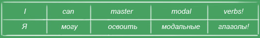

Модальные глаголы
Английские глаголы доставляют много неприятностей людям, изучающим английский язык: окончания, вспомогательные, смысловые глаголы, модальные...
Модальные?! Вот тут как раз всё предельно просто: не нужно думать об окончаниях и вспомогательных глаголах. Берёте модальный глагол, добавляете к нему любой другой глагол и готово:

Но одно правило всё-таки стоит запомнить: после модальных глаголов не нужна частица to!